title: "Présentation du jeu" layout: default <<<<<<< HEAD =======
⚔️ Clash of piglin
Un RTS inspiré du Nether de Minecraft

IA_VANDENKOORNHUYSE
Clash of Piglin
Un RTS inspiré du Nether de Minecraft
Introduction
Bienvenue dans Clash of piglin, un jeu de stratégie en temps réel où deux armées s’affrontent dans les profondeurs du Nether.
Chaque joueur doit gérer son armée de Piglins et de Ghasts pour anéantir le bastion ennemi situé à l’extrémité opposée de la carte.
Le jeu combine gestion tactique, contrôle direct des unités et progression économique.
Votre réussite dépendra de votre sens de la stratégie et de votre capacité à exploiter les particularités du terrain du Nether.
 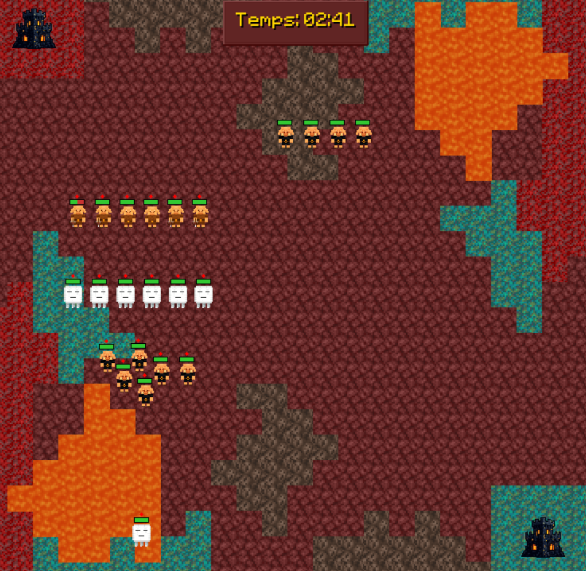
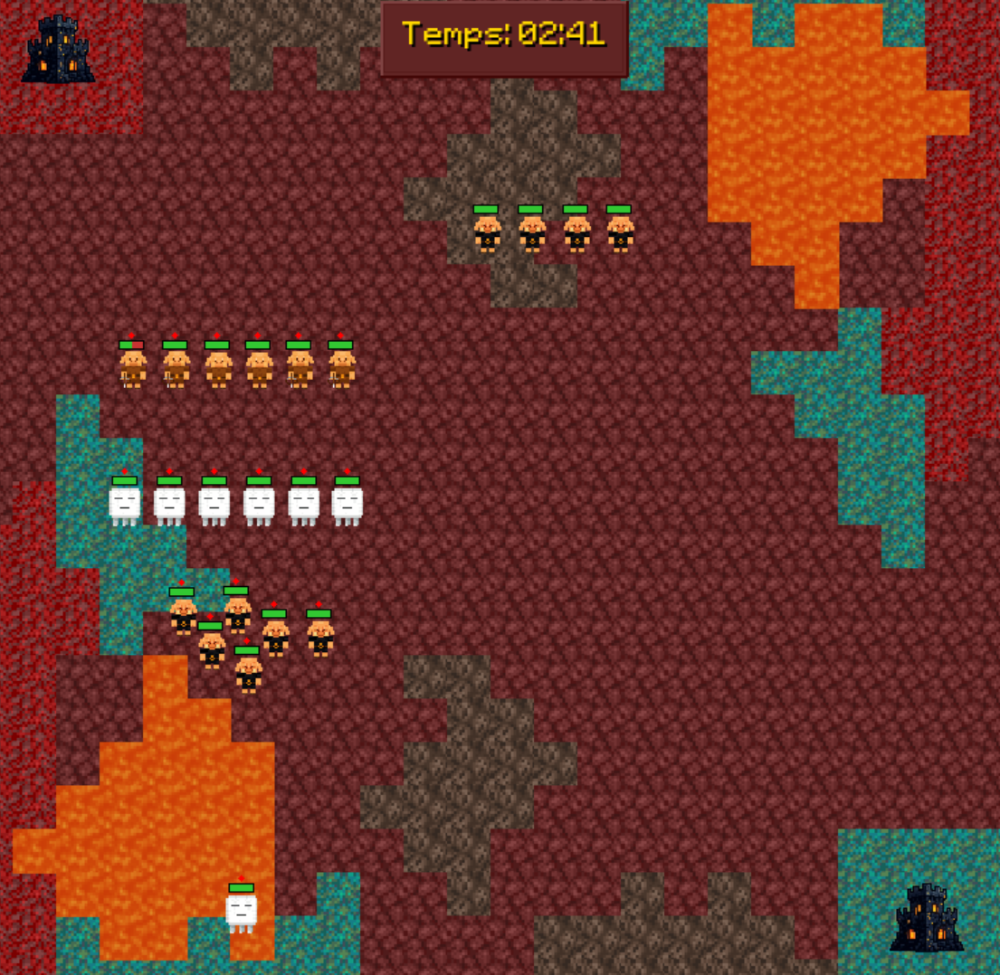
Objectif
Détruisez le bastion ennemi avant que le vôtre ne tombe.
Chaque joueur défend un bastion :
- Si votre bastion est détruit → vous perdez.
- Si vous détruisez celui de l’adversaire → vous remportez la partie.
Interface du jeu
L’interface de Clash of piglin est divisée en plusieurs sections :
| Zone | Description |
|---|---|
| Zone centrale | Champ de bataille où évoluent vos troupes |
| Barre latérale gauche | Indique vos ressources et la vie de votre bastion et permet l'achat des unités pour le joueur 1 |
| Barre latérale droite | Indique vos ressources et la vie de votre bastion et permet l'achat des unités pour le joueur 2 |
| Timer | Indique le temps depuis le début de la partie |
<<<<<<< HEAD 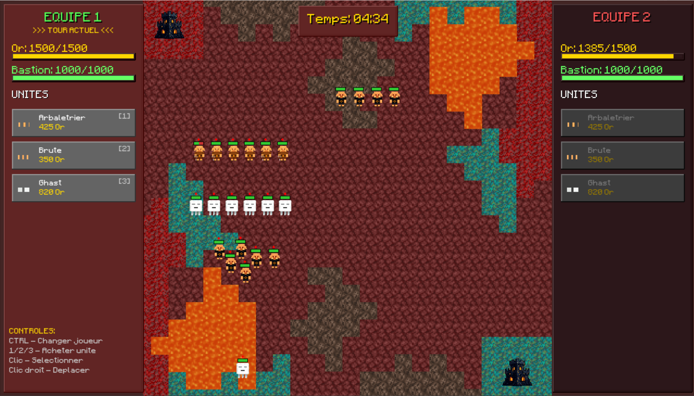
Ressources
=======

🪙 Ressources
IA_VANDENKOORNHUYSE La génération d’or augmente automatiquement en fonction de la durée de la partie :
| Temps écoulé (minutes) | Revenu par seconde |
|---|---|
| 0:00 → 1:00 | +0.13 |
| 1:00 → 2:00 | +0.16 |
| 2:00 → 3:00 | +0.20 |
| 3:00 → 4:00 | +0.25 |
| 4:00 | +0.30 |
<<<<<<< HEAD
Basez une stratégie basée sur la quantité d'or que vous possédez. Économiser de l'or sera parfois la meilleure chose à faire.
💡 Basez une stratégie basée sur la quantité d'or que vous possédez. Économiser de l'or sera parfois la meilleure chose à faire.
IA_VANDENKOORNHUYSE
Vous pourrez obtenir sur les unités adverses vaincus des récompenses correspondant à 10% du coût de l'unité.
Les unités
| Unité | Image | Type | Cibles | Rôle principal |
|---|---|---|---|---|
| <<<<<<< HEAD | ||||
| Piglin Brute | 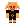 | Corps à corps | Troupes terrestres | Attaquant puissant de première ligne |
| Piglin Arbalétrier | 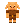 | Distance | Troupes terrestres et aériennes | Soutien à moyenne portée |
| Ghast | 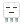 | Aérien | Bâtiments uniquement | Bombardement des structures ennemies |
| ======= | ||||
| Piglin Brute |  |
Corps à corps | Troupes terrestres | Attaquant puissant de première ligne |
| Piglin Arbalétrier |  |
Distance | Troupes terrestres et aériennes | Soutien à moyenne portée |
| Ghast |  |
Aérien | Bâtiments uniquement | Bombardement des structures ennemies |
| >>>>>>> IA_VANDENKOORNHUYSE |
Détails des unités
<<<<<<< HEAD
Piglin Brute
=======
🪓 Piglin Brute
IA_VANDENKOORNHUYSE - Forces : Grande résistance, dégâts élevés au corps à corps, rapide
- Faiblesses : Incapable de toucher les unités aériennes, limité au corps-à-corps
- Coût : 350 or
- Vitesse : rapide
- Rôle : Encaisser les dégâts et protéger les unités à distance
<<<<<<< HEAD
Piglin Arbalétrier
=======
🏹 Piglin Arbalétrier
IA_VANDENKOORNHUYSE - Forces : Polyvalent, portée moyenne
- Faiblesses : Faible défense, DPS moyen - Coût : 425 or
- Vitesse : moyenne
- Rôle : Soutenir les Brutes et contrer les Ghasts
<<<<<<< HEAD
Ghast
=======
👁️ Ghast
IA_VANDENKOORNHUYSE - Forces : Vole, bonne portée, dégats élevés, cible directement les bâtiments - Faiblesses : Incapable de se défendre, faible vitesse d'attaque - Coût : 820 or
- Vitesse : moyenne
- Rôle : Détruire les bâtiments et assiéger le bastion adverse
Commandes
| Action | Commande |
|---|---|
| Sélectionner une unité | Clic gauche |
| Sélection multiple | Maintenir clic gauche et glisser |
| Déplacer les troupes | Clic droit sur la carte |
| Changer de joueur | Ctrl |
| Déplacer la caméra | Flèches directionnelles |
| Zoom / Dézoom | Molette de la souris |
<<<<<<< HEAD
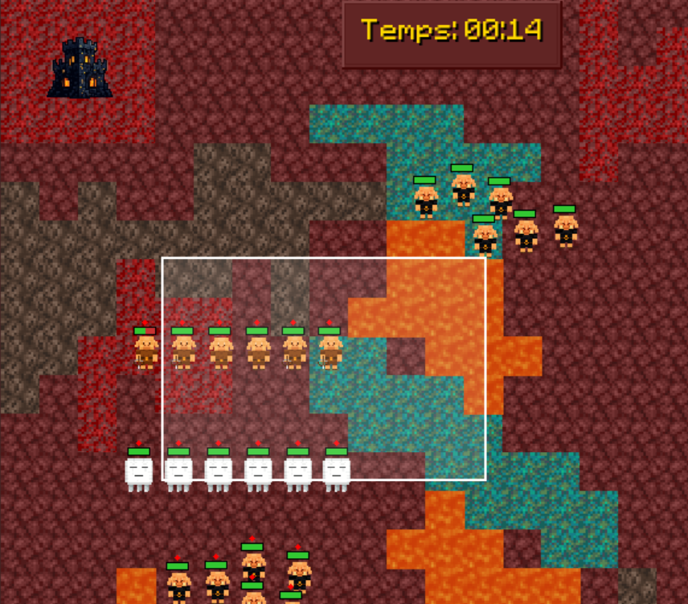
=======

IA_VANDENKOORNHUYSE
Astuce : Vous pouvez combiner clic gauche + molette pour ajuster rapidement votre zone de contrôle.
Interface d’achat
<<<<<<< HEAD
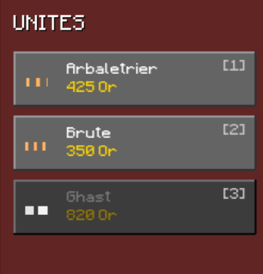
=======

IA_VANDENKOORNHUYSE
Chaque côté de l’écran affiche une interface d’achat :
- Liste des unités disponibles avec leur coût.
- Solde actuel d’or.
- Barre de vie du bastion.
Cliquez sur une unité pour la recruter immédiatement, selon vos ressources disponibles.
Les troupes apparaissent à proximité de votre bastion.
Terrain et effets
Le champ de bataille du Nether influence vos unités :
| Type de terrain | Apparence | Effet principal |
|---|---|---|
| <<<<<<< HEAD | ||
| Netherrack | 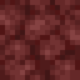 | Terrain neutre |
| Blue Netherrack | 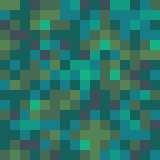 | Terrain décoratif (présent sous votre bastion) |
| Red Netherrack |  |
Terrain décoratif (présent sous le bastion adverse) |
| Soul Sand | 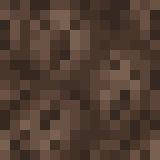 | Ralentit les unités terrestres |
| Lava | 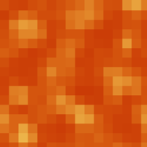 | Infranchissable par les unités terrestres |
> Les unités volantes ne sont pas affectées par le terrain.
| Netherrack |  | Terrain neutre |
| Blue Netherrack |
| Terrain neutre |
| Blue Netherrack |  | Terrain décoratif (présent sous votre bastion) |
| Red Netherrack |
| Terrain décoratif (présent sous votre bastion) |
| Red Netherrack |  | Terrain décoratif (présent sous le bastion adverse) |
| Soul Sand |
| Terrain décoratif (présent sous le bastion adverse) |
| Soul Sand |  | Ralentit les unités terrestres |
| Lava |
| Ralentit les unités terrestres |
| Lava |  | Infranchissable par les unités terrestres |
| Infranchissable par les unités terrestres |
💡 Les unités volantes ne sont pas affectées par le terrain.
IA_VANDENKOORNHUYSE
Déroulement d’une partie
- Chaque joueur démarre avec un bastion et un revenu initial.
- Achetez vos premières unités via l’interface latérale.
- Déployez-les et positionnez-les stratégiquement.
- Les revenus augmentent au fil du temps, permettant plus d’unités.
- La bataille continue jusqu’à la destruction d’un des bastions.
<<<<<<< HEAD
 =======
=======

IA_VANDENKOORNHUYSE
Conseils stratégiques
<<<<<<< HEAD
- Protégez votre bastion avec un mur de Piglins Brute.
- Placez vos arbalétriers légèrement en retrait.
- Envoyez les Ghasts sur les bâtiments pendant que vos unités au sol occupent l’ennemi.
- Surveillez vos ressources : un bon rythme d’achat garantit la supériorité numérique.
- Ne restez pas statique ! Déplacez vos troupes selon la situation du champ de bataille.
=======
- 🧱 Protégez votre bastion avec un mur de Piglins Brute.
- 🏹 Placez vos arbalétriers légèrement en retrait.
- 👁️ Envoyez les Ghasts sur les bâtiments pendant que vos unités au sol occupent l’ennemi.
- 💰 Surveillez vos ressources : un bon rythme d’achat garantit la supériorité numérique.
- ⚡ Ne restez pas statique ! Déplacez vos troupes selon la situation du champ de bataille.
IA_VANDENKOORNHUYSE
Fin de partie
La partie se termine lorsque :
- La vie d’un bastion tombe à zéro.
- Le joueur adverse est déclaré vainqueur.
<<<<<<< HEAD
 =======
=======

IA_VANDENKOORNHUYSE
Crédits
Clash of Piglin est un projet de développement indépendant inspiré de l’univers de Minecraft (© Mojang Studios).
Conçu et programmé par Mallevaey Adrien, Vandenkoornhuyse Lorenzo, Ciolkowski Yann, Pruvost Scotty, Vandewalle Jérome et Pinceel Matthieu.
<<<<<<< HEAD
=======

IA_VANDENKOORNHUYSE